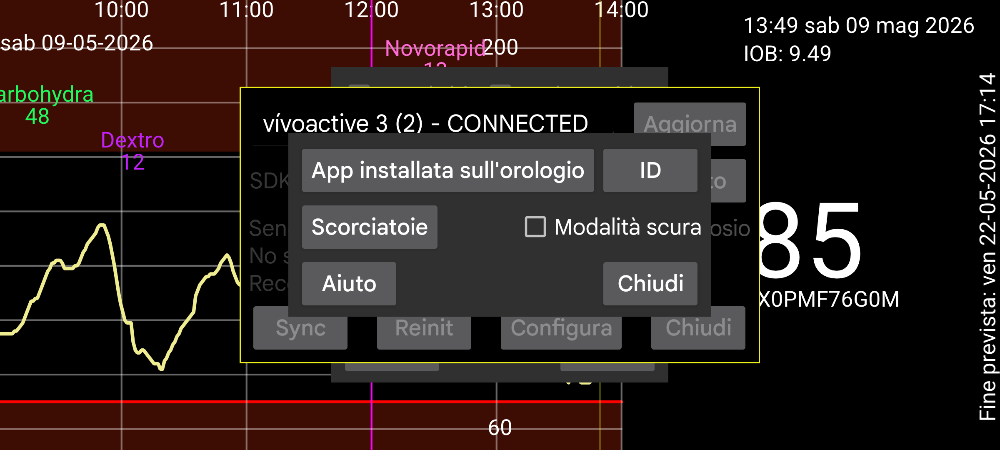

ar be de es fr hi it ja nl pl pt ru tr uk uz zh en
Il codice sorgente di Kerfstok può essere scaricato da https://www.juggluco.nl/Kerfstok/Kerfstok-source.html). Gli utenti sono liberi di modificarlo. Ogni app per orologio ha un identificatore univoco. Se l'identificatore è diverso da quello predefinito, Juggluco deve conoscerlo per comunicare con l'app dell'orologio. Per specificare un identificatore diverso premi ID e digita la stringa esadecimale di 32 caratteri. Juggluco su un dispositivo può essere connesso solo a un'app per orologio su un orologio. Le modifiche porteranno alla perdita di dati.
Le scorciatoie sono inviate all'app Garmin per orologi Kerfstok per inserire facilmente determinati valori.
Specifica se Kerfstok deve essere bianco su nero invece che nero su bianco.